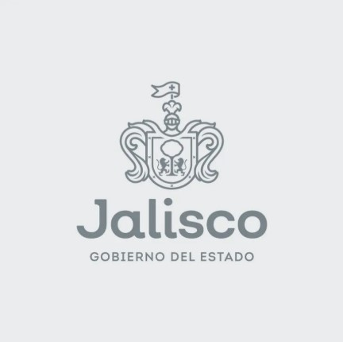

Zapopan me formó
Soy orgullosamente zapopana. Estudié Derecho en el ITESO, soy maestra en Gobernanza Estratégica y Comunicación Política por la George Washington University y tengo formación en la Harvard Kennedy School.
Trabajo por Zapopan desde 2013, cuando todavía no existía un equipo de gobierno. Formé parte del primer gobierno de Pablo Lemus y desde entonces camino en el mismo proyecto con él y con Juan José Frangie. En 2021 fui la diputada más votada de Jalisco y en 2024 Zapopan me reeligió con la votación más alta del estado. Fui la presidenta más joven del Congreso de Jalisco y hoy encabezo la Comisión de Salud, desde donde llevo lo que construimos aquí a foros como la Organización Panamericana de la Salud.
Vivo con diabetes tipo 1 y me siento poderosa gracias a ustedes. Cuando ponemos todas nuestras ganas y convicción en hacer algo mejor por los demás, lo logramos. Aquí he estado siempre y aquí voy a seguir.
- Maestra por la George Washington University
- Presidenta de la Comisión de Salud · Congreso de Jalisco
- Expresidenta del Congreso de Jalisco
Lo que hemos
logrado juntas y juntos
Ley contra Reclutamiento de NNA
Para que el Estado llegue antes que el crimen a escuelas y colonias, y atienda a las víctimas.
2026Ley de Movilidad y Seguridad Vial
Pone primero a peatones, ciclistas y usuarios del transporte público, y protege a las mujeres para que se muevan libres y seguras.
2022Ley Jalisco de Colores · Autismo
Diagnóstico, terapias e inclusión para personas en el espectro y sus familias. En Zapopan ya hay dos centros públicos de atención.
2026Ley de Diabetes Tipo 1
Jalisco fue el primer estado del país con una ley de atención integral para la diabetes tipo 1.
LXIII LegislaturaSomos Uno
Insulina, sensores, insumos y atención gratuita para niñas, niños y jóvenes de hasta 23 años con diabetes tipo 1. El Centro D1A, único en su tipo en el país, está en Zapopan.
ProgramaLey de Cáncer en la Infancia y la Adolescencia
Las niñas y los niños con cáncer en Jalisco tienen cobertura médica universal.
LXIII LegislaturaSigamos Adelante: Mujeres que Luchan Contra el Cáncer
40 millones de pesos del Presupuesto 2026 para que las mujeres sin seguridad social con cáncer de mama o cervicouterino no dejen su tratamiento.
2026Menopausia Digna
Para que la red estatal de salud acompañe a las mujeres en el climaterio y la menopausia.
2026De Zapopan al mundo
Lo que hemos construido en Zapopan y en Jalisco hoy es referencia fuera de México. Llevo nuestras leyes a foros internacionales para sumar aliados y aprender de otros países.
Organización Panamericana de la Salud
Primera legisladora invitada en la historia a hablar ante el Consejo Directivo de la OPS, como representante de UNITE, la red global de parlamentarios por la salud. Presenté como caso de éxito las leyes de Jalisco en cáncer infantil, cáncer en mujeres, diabetes tipo 1 y autismo, y por qué tener presupuesto garantizado por ley hace la diferencia.
Harvard Kennedy School
Programa Emerging Leaders.
Foro MIND360
Compartí con líderes de América Latina el modelo de Jalisco para garantizar tratamiento y atención integral a personas con diabetes tipo 1.
Sede de la ONU
Panelista en el foro "La Salud como Componente Esencial de Ciudades Familiarmente Sostenibles", donde presenté Somos Uno, el programa de atención integral gratuita para niñas, niños, adolescentes y jóvenes con diabetes tipo 1.
Seguridad Vial · Fondo Conjunto México-Uruguay
Presenté la Ley de Movilidad, Seguridad Vial y Transporte de Jalisco y los resultados del proyecto de entornos escolares del Gobierno de Jalisco.
Programa de Liderazgo para Visitantes Internacionales
Seleccionada por el Departamento de Estado para el programa "Youth, Inspiring Leadership and Civic Participation", con estancias en Washington, Boston, Portland y Ohio, junto a líderes de otros 21 países.
George Washington University
Maestría en Gobernanza Estratégica y Comunicación Política.

Unidos llegamos lejos
Zapopan es hoy una de las mejores ciudades para vivir en México, la primera Ciudad de las Niñas y los Niños del país y un referente de buenos gobiernos. Lo construimos en equipo.
Hoy Pablo Lemus encabeza Jalisco, Juan José Frangie encabeza Zapopan y desde el Congreso me toca acompañar ese proyecto.
Mi camino en
Zapopan
👆 Toca cada año para conocer más
Movimiento Ciudadano
Inicio del camino en política
Ver más →Directora del Instituto de la Juventud de Zapopan
+600 jóvenes beneficiados
Ver más →Regidora de Zapopan
La más joven de la zona metropolitana
Ver más →Diputada local
🗳️ La más votada de Jalisco · 80,114 votos
Ver más →Reelecta y presidenta del Congreso
🗳️ Votación más alta del estado · 111,748 votos
Ver más →Zapopan en la ONU
Panelista en la sede de la ONU · Nueva York
Ver más →Nuevas leyes y voz internacional
OPS · Harvard Kennedy School · Leyes aprobadas
Ver más →Gira y descubre mi trabajo
Gira para descubrir una de mis leyes, programas o logros reales.
¿Tienes algún problema en tu colonia o una propuesta?
Escanea el código con tu celular y escríbeme directo por WhatsApp. Aquí estoy para escucharte.
Abrir WhatsAppEscanea para escribirme